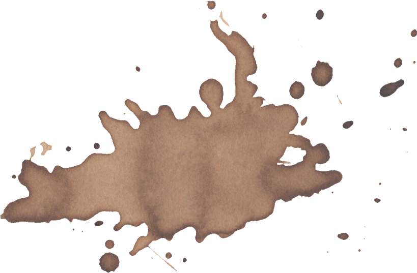
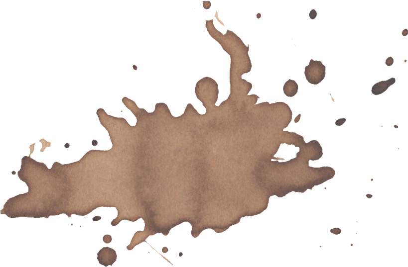

I.
Hear the sledges with the bells—
Silver bells!
What a world of merriment their melody foretells!
How they tinkle, tinkle, tinkle,
In the icy air of night!
While the stars that oversprinkle
All the heavens, seem to twinkle
With a crystalline delight;
Keeping time, time, time,
In a sort of Runic rhyme,
To the tintinabulation that so musically wells
From the bells, bells, bells, bells,
Bells, bells, bells—
From the jingling and the tinkling of the bells.
II.
Hear the mellow wedding bells,
Golden bells!
What a world of happiness their harmony foretells!
Through the balmy air of night
How they ring out their delight!
From the molten-golden notes,
And all in tune,
What a liquid ditty floats
To the turtle-dove that listens, while she gloats
On the moon!
Oh, from out the sounding cells,
What a gush of euphony voluminously wells!
How it swells!
How it dwells
On the Future! how it tells
Of the rapture that impels
To the swinging and the ringing
Of the bells, bells, bells,
Of the bells, bells, bells, bells,
Bells, bells, bells—
To the rhyming and the chiming of the bells!
Hear the loud alarum bells—
Brazen bells!
What tale of terror, now, their turbulency tells!
In the startled ear of night
How they scream out their affright!
Too much horrified to speak,
They can only shriek, shriek,
Out of tune,
In a clamorous appealing to the mercy of the fire,
In a mad expostulation with the deaf and frantic fire,
Leaping higher, higher, higher,
With a desperate desire,
And a resolute endeavor
Now—now to sit or never,
By the side of the pale-faced moon.
Oh, the bells, bells, bells!
What a tale their terror tells
Of Despair!
How they clang, and clash, and roar!
What a horror they outpour
On the bosom of the palpitating air!
Yet the ear it fully knows,
By the twanging,
And the clanging,
How the danger ebbs and flows;
Yet the ear distinctly tells,
In the jangling,
And the wrangling.
How the danger sinks and swells,
By the sinking or the swelling in the anger of the bells—
Of the bells—
Of the bells, bells, bells, bells,
Bells, bells, bells—
In the clamor and the clangor of the bells!
IV.
Hear the tolling of the bells—
Iron bells!
What a world of solemn thought their monody compels!
In the silence of the night,
How we shiver with affright
At the melancholy menace of their tone!
III.
For every sound that floats
From the rust within their throats
Is a groan.
And the people—ah, the people—
They that dwell up in the steeple,
All alone,
And who tolling, tolling, tolling,
In that muffled monotone,
Feel a glory in so rolling
On the human heart a stone—
They are neither man nor woman—
They are neither brute nor human—
They are Ghouls:
And their king it is who tolls;
And he rolls, rolls, rolls,
Rolls
A paean from the bells!
And his merry bosom swells
With the paean of the bells!
And he dances, and he yells;
Keeping time, time, time,
In a sort of Runic rhyme,
To the paean of the bells—
Of the bells:
Keeping time, time, time,
In a sort of Runic rhyme,
To the throbbing of the bells—
Of the bells, bells, bells—
To the sobbing of the bells;
Keeping time, time, time,
As he knells, knells, knells,
In a happy Runic rhyme,
To the rolling of the bells—
Of the bells, bells, bells—
To the tolling of the bells,
Of the bells, bells, bells, bells—
Bells, bells, bells—
To the moaning and the groaning of the bells.
—
back